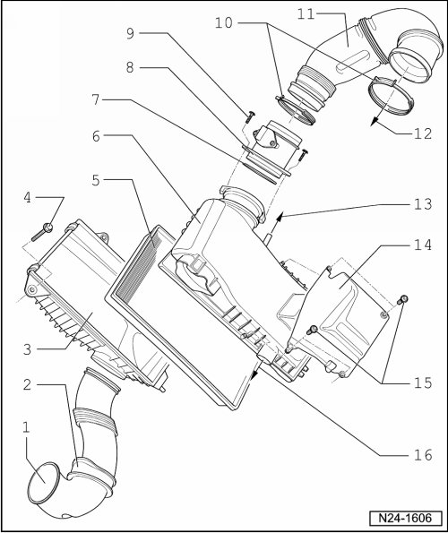
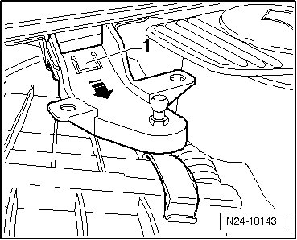
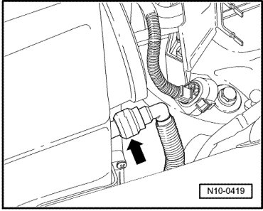
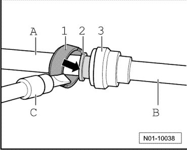

Air Filter Element: Service and Repair
Air Filter, Assembly Overview
--> [ Air Suspension Compressor, Disconnecting ]

1 Air duct
• Secured to lock carrier
2 Protective grommet
3 Air filter lower part
• To remove the air filter lower part, remove the bracket --> [ Removing Bracket for Engine Cover ]
4 10 Nm
5 Filter element
6 Air filter upper part
7 Seal
• Replace if damaged
8 Mass Air Flow (MAF) sensor (G70) with Intake Air Temperature (IAT) sensor (G42)
• Sensor contacts and connector contacts gold plated
• Black connector, 5-pin
9 6 Nm
10 Spring-type clip
• Check for secure seat
11 Intake tube
12 To throttle valve control module (J338)
13 To compressor for air suspension
• Separating connection --> [ Air Suspension Compressor, Disconnecting ].
• Depending on optional equipment, connection may be sealed with a blanking plug.
14 Heat shield
• For upper part of air filter
15 6 Nm
16 To Secondary Air Injection (AIR) pump motor (V101)
Removing Bracket for Engine Cover

- Press in the retaining tab - 1 - from below and pull out the bracket in direction of - arrow -.
Air Suspension Compressor, Disconnecting
- Separate the compressor line at the air filter - arrow - as follows:

- Carefully pry off the green circlip - 1 - using a screwdriver. Then press the clamping ring - 2 - in direction of - arrow -.
- Pull only the slackened line - B - from the connection - A - at the air filter.
